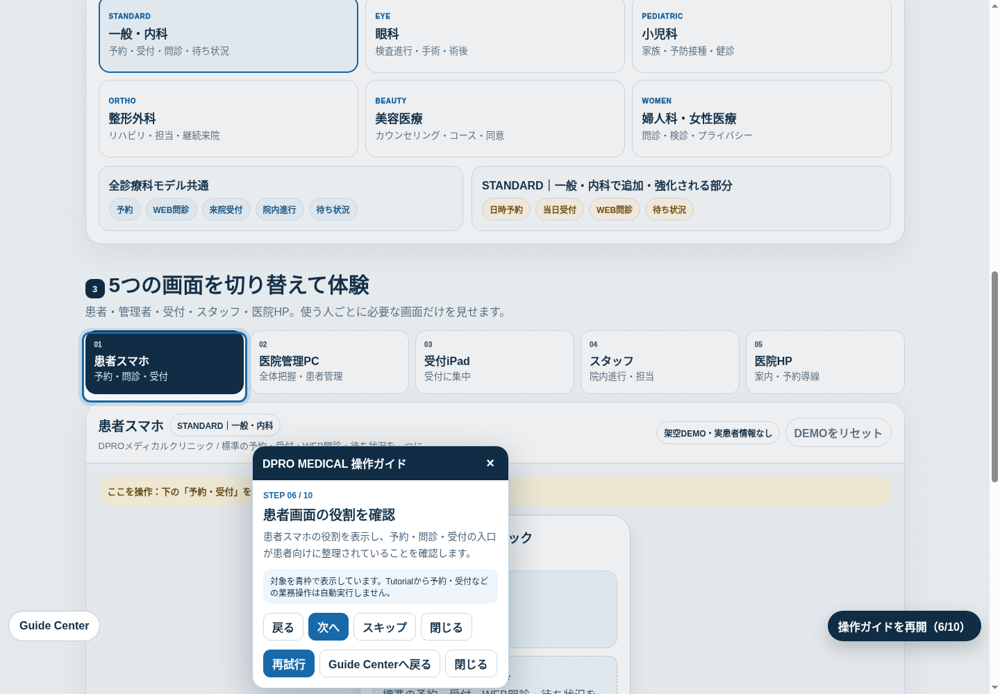
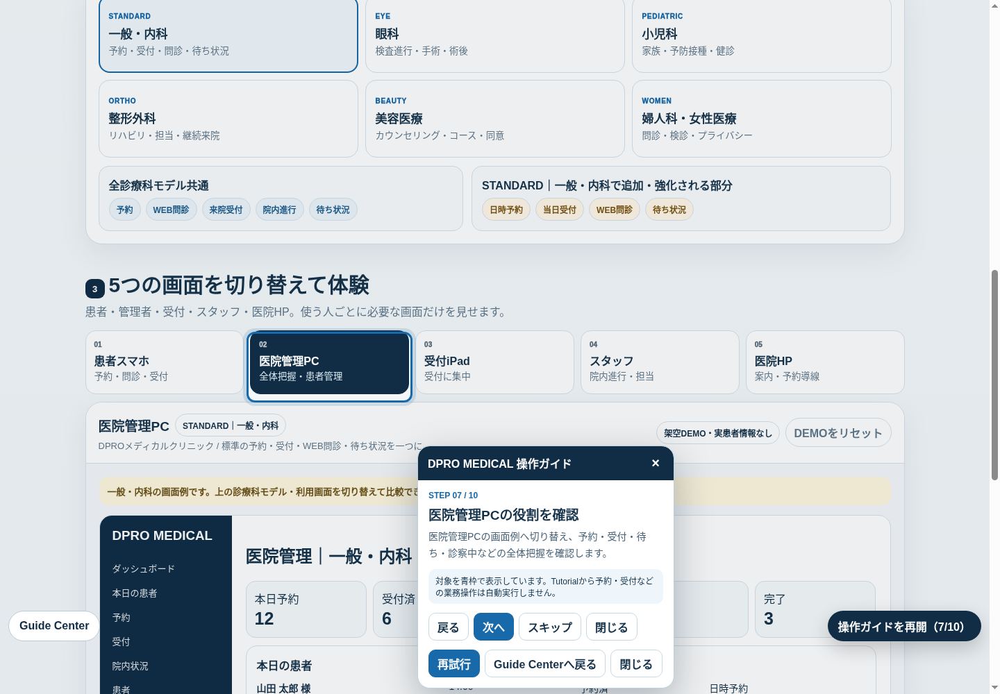
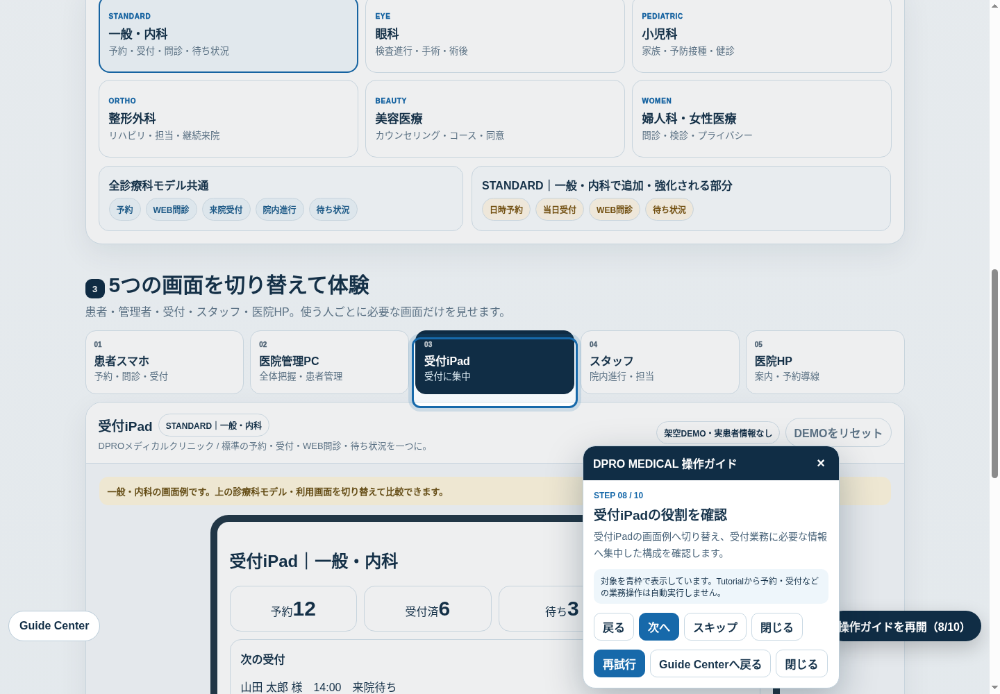
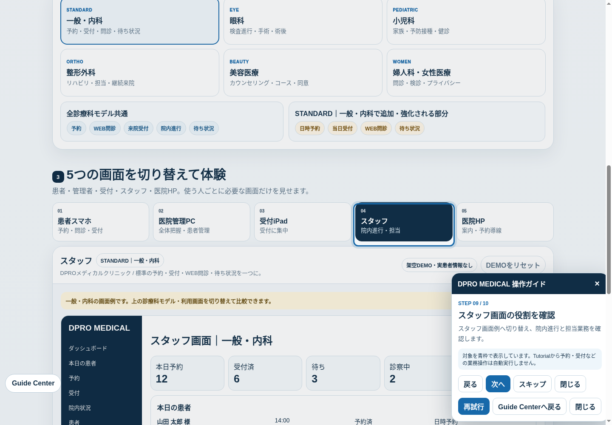
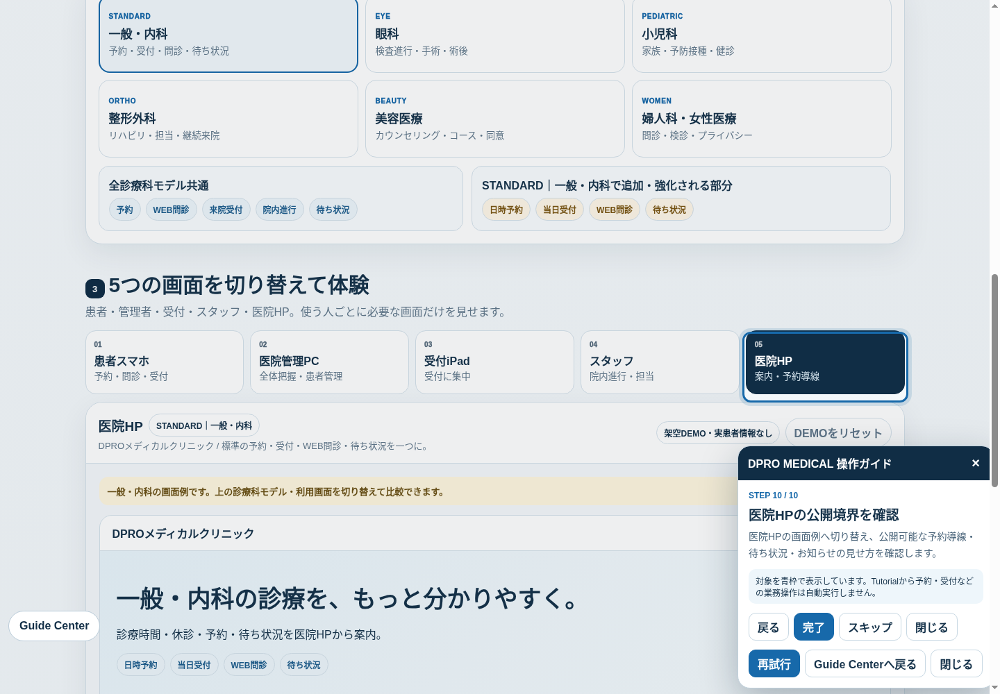
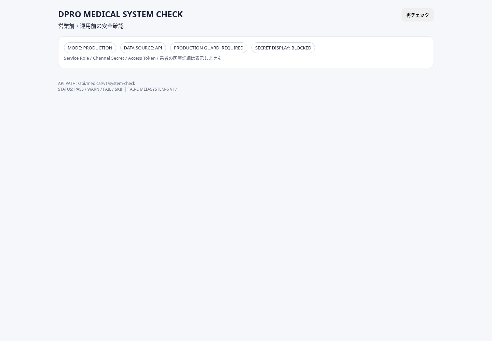

DPRO MEDICAL / DETAILED MANUAL / V1.2.2
Tutorial V1.2.2とFirst10
この保存版は、CENTRAL ACCEPT済みのTutorial Navigation V1.2.2の挙動を説明するサポート資料です。Tutorial自体を再定義せず、Owner・受付・Staffが導入後も単独で確認できるようにまとめています。

Guide Center V1.2.2
https://dpromstk2000-lab.github.io/dpro-medical-standard/guide-center.html
First10 exactly 10
StartはStep 1。Resumeは保存済みの正確なStepと必要表示状態。ReplayはTutorial進捗だけをStep 1へ戻します。
Back / Nextで移動し、Close / Escは進捗を保持します。
実target
各Stepで実targetを解決し、必要に応じてscrollして青枠でhighlightします。
TARGET_MISSINGなら停止し、そのStepを成功扱いにしません。

Tutorialは送信・保存・承認・削除・決済などを自動実行しません。targetを表示するための安全なview-state変更はbusiness mutationではありません。
PATIENT / 患者スマホ
1. 患者画面の確認
日常の見方
- 予約・予約確認の入口を確認。
- 必要に応じてWEB問診を確認。
- 来院時の受付導線と待ち状況を確認。
- 公開情報と患者本人向け情報の境界を確認。

Tutorial Step 06は患者roleを表示するための安全なview-state切替を行いますが、「予約・受付」等の業務ボタンを自動実行しません。本番では正式な患者認証を使用し、公開DEMOの架空データを流用しません。
OWNER / 医院管理PC
2. Owner - 毎日の流れ
営業前
ログイン役割を確認し、当日の予約・受付予定を確認。System Checkで異常がないことを確認します。
診療中
受付済・待ち・診察中・完了など全体状態を確認し、必要な役割へ情報を引き継ぎます。

終了時
未処理、次回フォロー、公開情報の差分を確認します。設定変更や業務更新はOwner権限と医院の運用規程に従います。
Tutorial Step 07はOwner roleの見方を案内するだけで、患者データの変更・承認・削除を行いません。
RECEPTION / 受付iPad
3. 受付iPad
受付担当の確認範囲
- 来院患者と受付対象を確認。
- 受付担当に必要な情報へ集中。
- 院内進行はOwner / Staff画面との整合を確認。
- Owner専用設定や不要な管理操作は行わない。

Tutorial Step 08は受付iPad roleを表示するだけです。実際の受付確定・患者更新などは、担当者が本番画面で確認して実行します。
STAFF / スタッフ
4. スタッフ画面
スタッフの見方
- 担当業務と院内進行を確認。
- 自分の権限内で必要な業務を実行。
- 患者公開情報と院内情報を混同しない。
- 判断が必要な変更はOwner / 医院責任者へ確認。

Tutorial Step 09はスタッフroleの表示と説明に限定されます。権限を超えた更新や診療判断を自動化しません。
PUBLIC HP / 公開境界
5. 医院HPと公開境界
医院HP DEMO
medical-site-demo.html
公開してよいもの
予約導線、診療時間、休診、お知らせ、医院が公開を承認した待ち状況など。
公開しないもの
患者個人情報、内部メモ、認証情報、秘密鍵、内部運用情報。

Tutorial Step 10は医院HPの公開境界を確認するための表示切替です。公開設定自体を自動変更しません。
PRESET / 6診療科モデル
6. 共通基盤と診療科差分

6診療科モデルを公開DEMOで確認
medical-public-demo.html
STANDARD一般・内科 / 予約・受付・問診・待ち状況EYE眼科 / 検査進行・手術案内・術後フォローPEDIATRIC小児科 / 家族・予防接種・健診ORTHO整形外科 / リハビリ・担当・継続来院BEAUTY美容医療 / カウンセリング・コース・同意WOMEN婦人科・女性医療 / 問診・検診・プライバシー
Step 05の意味
眼科PRESETを表示して実targetをhighlightします。PRESETの表示状態を切り替えることは説明上の安全なview-state変更であり、予約・受付・患者データなどのbusiness mutationではありません。
SYSTEM CHECK / 復旧
7. System Checkと復旧順序

System Check
system-check.html
基本順序
1画面を再読み込み。
2Guide Centerで該当Stepとroleを再確認。
3TARGET_MISSINGなら「再試行」。解決しなければGuide Centerへ戻る。
4System Checkを開き、FAILがある場合は本番操作を進めない。

System Checkは確認入口です。診療判断や本番データの自動修復を代行するものではありません。
SAFETY / PRIVACY / ACCESSIBILITY
8. TARGET_MISSINGと安全境界
DPRO MEDICAL 製品情報
systems/medical.html
TARGET_MISSING
必須targetが解決できないStepは成功扱いにせず停止します。
Retryで再解決し、Guide Centerで説明を確認します。
Close / Esc
操作カードを閉じても進捗は保持されます。Resumeで保存済みStepと必要表示状態へ戻ります。
ReplayはTutorial進捗だけをリセットします。

守ること
- 実患者情報を公開DEMOや証跡へ入れない。
- 秘密鍵・認証情報・credentialsを資料へ載せない。
- キーボード / タッチ / マウスのfocus表示を維持。
- 診療判断をTutorialに委ねない。
CONTRACT AFTER / PROVISIONING
9. 契約後の本番切替

導入・サポート相談
https://lin.ee/YxJGXV6D
標準製品のTutorial / Guide / Manualと、契約後の本番Provisioningは別工程です。契約後は実際の医院情報・認証・運用ルールに合わせて安全に切り替えます。
契約後に設定するもの
- 正式tenant / clinic紐付け。
- Owner / Staff / 患者の本番認証。
- 医院情報・診療時間・休診・各種設定。
- LINE / HP等の正式導線。
- System Check全PASS。
保存版チェック
□ Guide Center確認
□ First10完了
□ 患者 / Owner / iPad / Staff / HP確認
□ PRESET確認
□ System Check PASS
□ 公開境界・個人情報確認

Support Synchronization V1.2.2: この資料は現行Tutorial仕様へ同期したサポート資料です。System Core / Worker / Supabase / Auth / API / Storage / LINE runtimeを変更するものではありません。